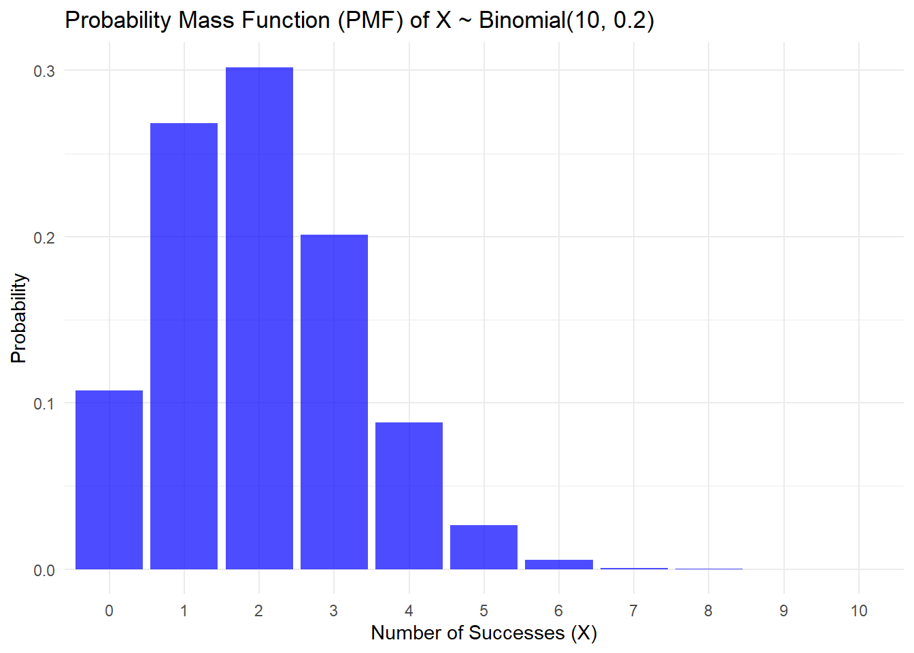
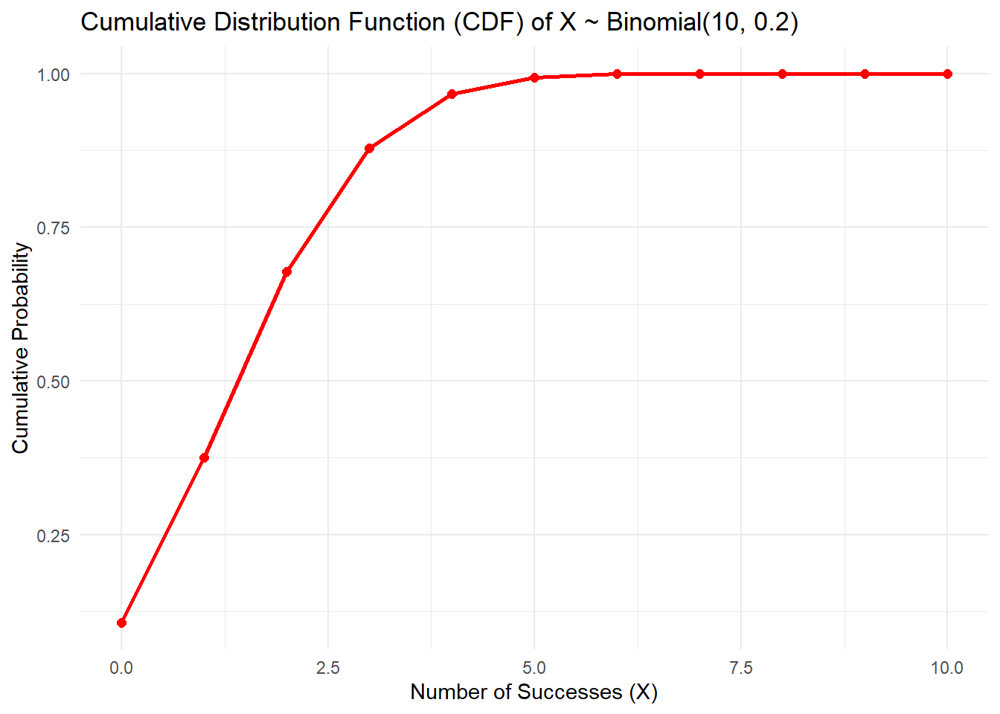
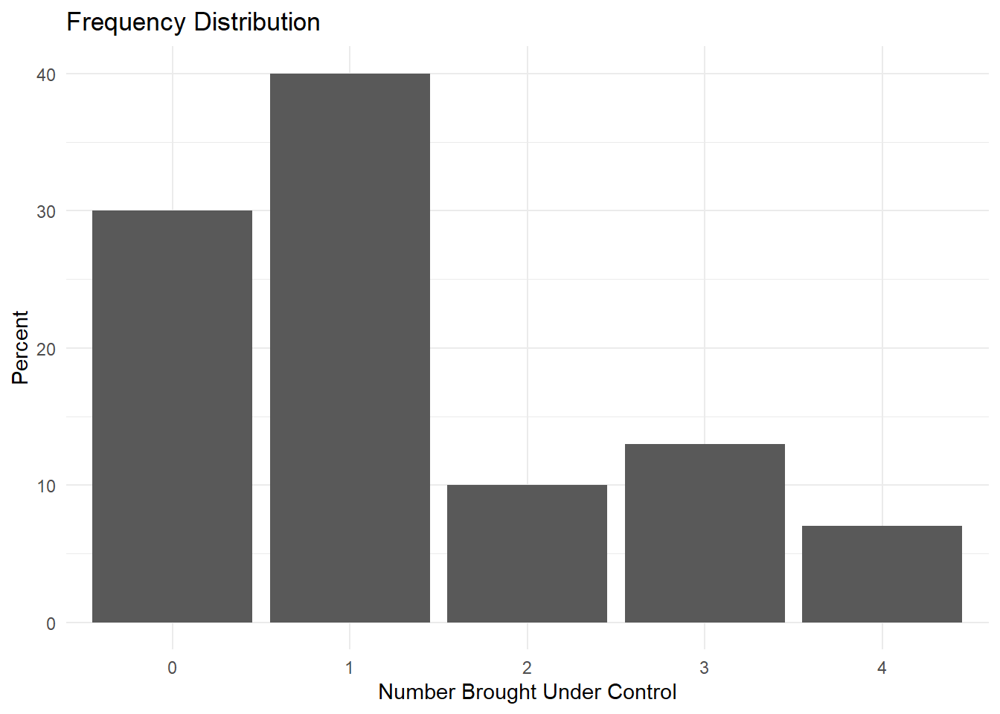
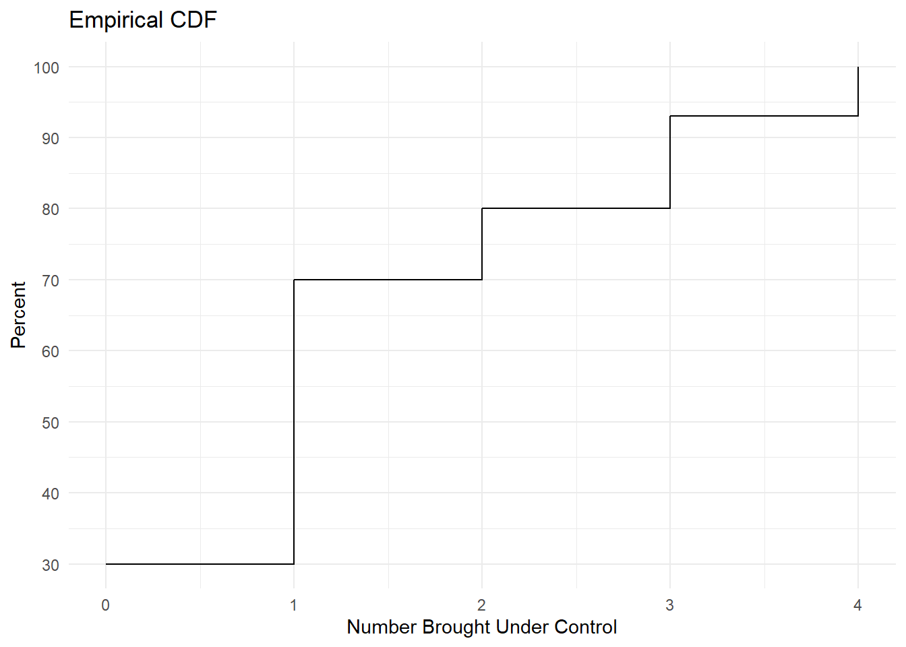
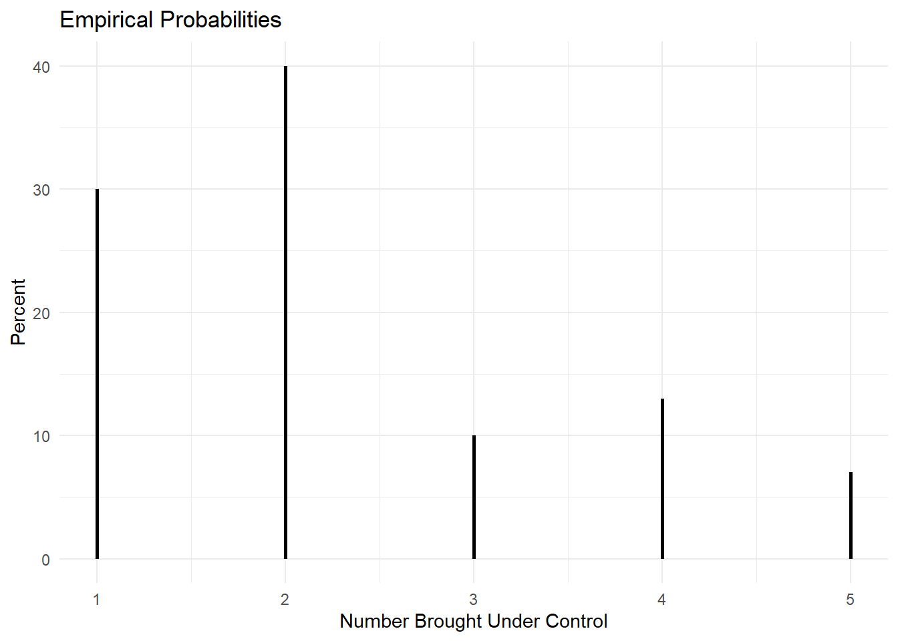

Code
# Given parameters
n <- 5 # number of phlebotomists
p <- 0.3 # probability of developing Hepatitis BDiscrete distributions
If \(X \sim \text{Binomial}(n, p)\):
Suppose we have a sample of five phlebotomists who were exposed to Hepatitis B via a needlestick accident. Suppose that it is reasonable to assume a health worker exposed to Hepatitis B via needlestick has a 30% chance of developing the disease. Let (X) represent how many of the five phlebotomists develop Hepatitis B.
# Given parameters
n <- 5 # number of phlebotomists
p <- 0.3 # probability of developing Hepatitis Bmean_X <- n * p
mean_X[1] 1.5sd_X <- sqrt(n * p * (1 - p))
sd_X[1] 1.024695num_orderings <- factorial(n)
num_orderings[1] 120num_combinations <- choose(n, 1)
num_combinations[1] 5prob_exactly_one <- dbinom(1, size = n, prob = p)
prob_exactly_one[1] 0.36015prob_none <- dbinom(0, size = n, prob = p)
prob_none[1] 0.16807prob_no_more_than_one <- pbinom(1, size = n, prob = p)
prob_no_more_than_one[1] 0.52822prob_at_least_three <- pbinom(2, size = n, prob = p, lower.tail = FALSE)
prob_at_least_three[1] 0.16308Suppose X ~ Binomial(10, 0.2). Compute and plot the probability mass function (PMF) and the cumulative distribution function (CDF) of X.
# Load functions from ggplot2
library(ggplot2)
# X ~ Binomial(10, 0.2)
n <- 10 # number of trials
p <- 0.2 # probability of successUsing the parameters n and p, we’ll generate values of the PMF and CDF.
# Generate the range of possible outcomes for X
x_values <- 0:n
# Compute the PMF and CDF
pmf_values <- dbinom(x_values, size = n, prob = p)
cdf_values <- pbinom(x_values, size = n, prob = p)Next we’ll place these vectors together with x_values in a tibble
library(tibble)
# Create a data frame for plotting
data_gg <- tibble(
x = x_values,
pmf = pmf_values,
cdf = cdf_values
)First plot the PMF
ggplot(data_gg, aes(x = factor(x), y = pmf)) +
geom_bar(stat = "identity", fill = "blue", alpha = 0.7) +
labs(title = "Probability Mass Function (PMF) of X ~ Binomial(10, 0.2)",
x = "Number of Successes (X)",
y = "Probability") +
theme_minimal()
Next plot the CDF
ggplot(data_gg, aes(x = x, y = cdf)) +
geom_line(color = "red", size = 1) +
geom_point(color = "red", size = 2) +
labs(title = "Cumulative Distribution Function (CDF) of X ~ Binomial(10, 0.2)",
x = "Number of Successes (X)",
y = "Cumulative Probability") +
theme_minimal()Warning: Using `size` aesthetic for lines was deprecated in ggplot2 3.4.0.
ℹ Please use `linewidth` instead.
Consider the example from lecture where a physician uses a new antihypertensive drug on the first 4 untreated hypertensive patients she encounters in her practice and X = the # of patients of 4 who are brought under control. The “htn.xlsx” dataset contains the results from 100 physicians who were asked to treat their next 4 untreated hypertensive patients with the drug and report their results. The data set has 2 variables:
physician provides an ID from 1-100
num_control gives the number out of 4 that were brought under control.
library(readxl)
htn <- read_xlsx("data/htn.xlsx")
htnWe can use what we learned in Lab #1 to calculate the frequency distribution and empirical CDF and plot the frequency distribution.
# Calculate frequency distribution
freq_dist <- as.data.frame(table(htn$num_control))
names(freq_dist) <- c("num_control", "Frequency")
# Calculate percentage
freq_dist$Percent <- (freq_dist$Frequency / sum(freq_dist$Frequency)) * 100
# Plot frequency distribution
ggplot(freq_dist) +
aes(x = as.factor(num_control), y = Percent) +
geom_bar(stat = "identity") +
labs(title = "Frequency Distribution",
x = "Number Brought Under Control",
y = "Percent") +
theme_minimal()
We can also plot the empirical CDF.
# Calculate empirical CDF
ecdf_func <- ecdf(htn$num_control)
# Create a data frame for plotting
cdf_data <- data.frame(num_control = unique(htn$num_control),
cum_pct = ecdf_func(unique(htn$num_control)) * 100)
# Plot empirical CDF
ggplot(cdf_data, aes(x = num_control, y = cum_pct)) +
geom_step() +
labs(title = "Empirical CDF",
x = "Number Brought Under Control",
y = "Percent") +
scale_y_continuous(breaks = seq(0, 100, by = 10)) +
theme_minimal()
If we want to create a needle plot for the frequency distribution, we first need to prepare the data similarly.
# Needle plot for frequency distribution
ggplot(freq_dist, aes(x = as.numeric(num_control), y = Percent)) +
geom_segment(aes(xend = as.numeric(num_control), yend = 0), size = 1) +
labs(title = "Empirical Probabilities",
x = "Number Brought Under Control",
y = "Percent") +
theme_minimal()
The Poisson distribution is a discrete probability distribution that expresses the probability of a given number of events occurring in a fixed interval of time or space.
If \(X \sim \text{Poisson}(\mu)\), then the probability mass function is given by:
\[P(X = k) = \frac{\mu^k e^{-\mu}}{k!}\]
where:
\(k = 0, 1, 2, \dots\)
\(X\)is the number of events occurring in time period \(t\)
\(\lambda\)is the expected number of events per unit time
\(\mu = \lambda t\)is the expected number of events in the time period \(t\)
\(E(X) = \mu\)
\(\text{Var}(X) = \mu\)
\(\text{SD}(X) = \sqrt{\mu}\)
Vehicles pass through a junction at an average rate of 300 per hour
# Average rate per minute
lambda_per_minute <- 300 / 60
prob_no_vehicles <- dpois(0, lambda_per_minute)
prob_no_vehicles[1] 0.006737947expected_vehicles <- lambda_per_minute * 2
expected_vehicles[1] 10prob_at_most_5 <- ppois(5, lambda_per_minute * 2)
prob_at_most_5[1] 0.06708596prob_more_than_20 <- 1 - ppois(20, lambda_per_minute * 2)
prob_more_than_20[1] 0.001588261